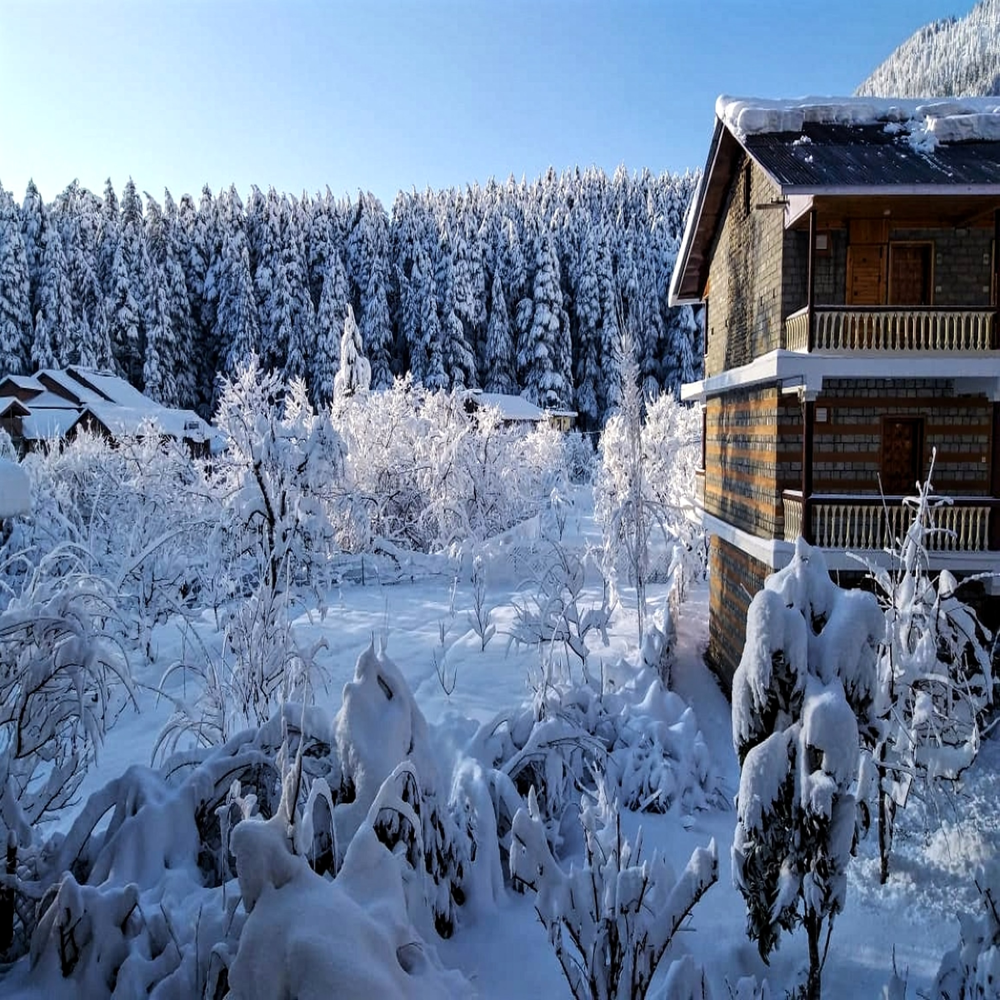
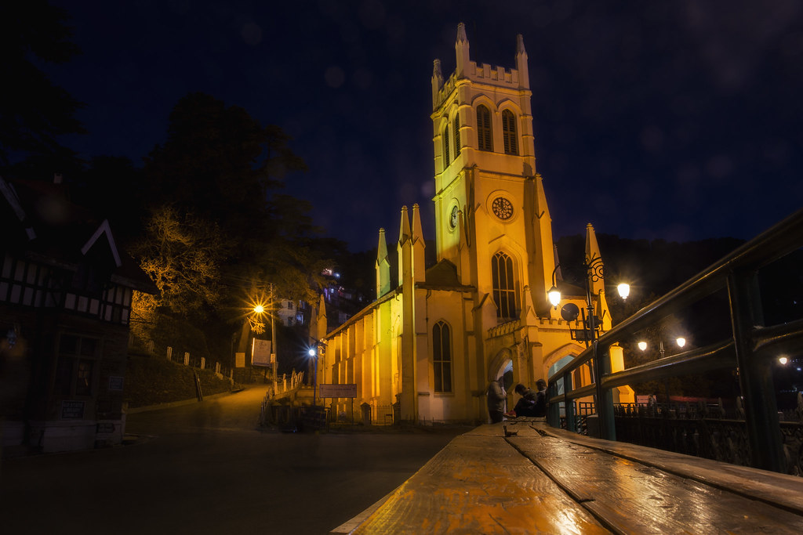
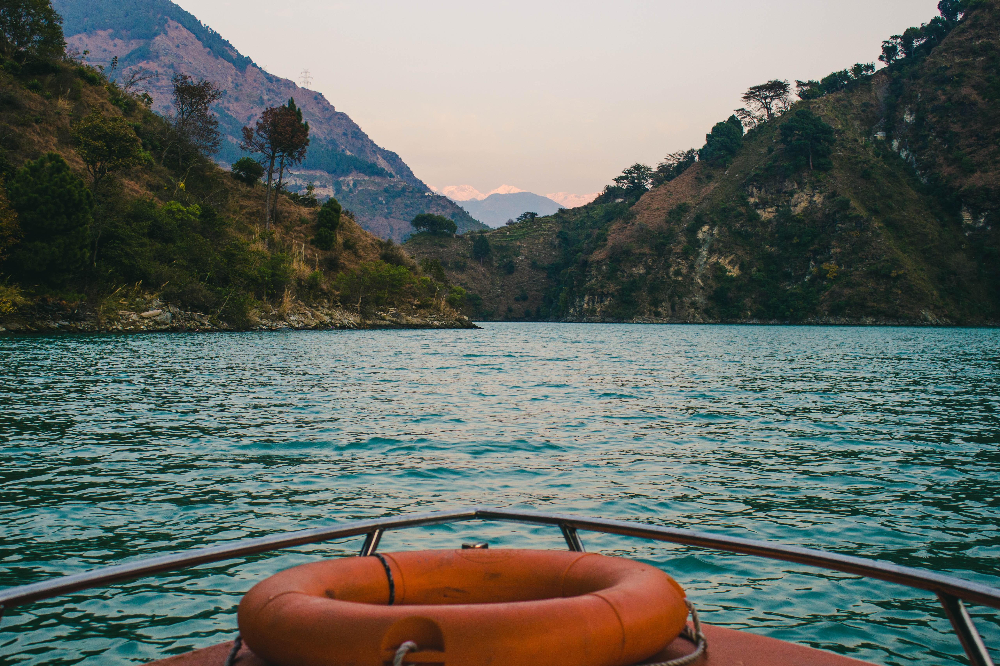
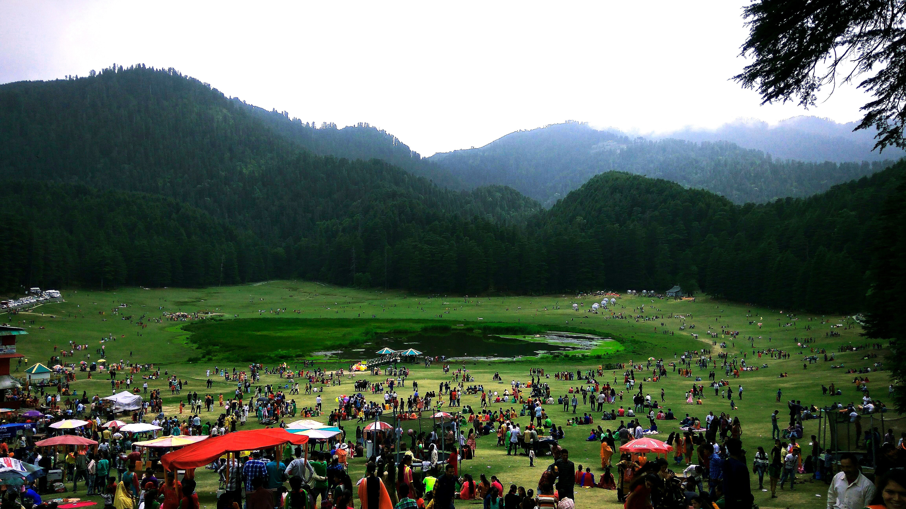

Discover the breathtaking beauty of Himachal Pradesh:
A Journey through the Top 10 Must-Visit Places
-
Manali
"Where the wind carries the scent of pine trees and the sun shines brighter than anywhere else, Manali awaits." Manali is a popular hill station located in the northern Indian state of Himachal Pradesh. Surrounded by majestic mountains, including the Pir Panjal and the Dhauladhar ranges, Manali is known for its stunning natural beauty. From the rushing Beas River to the lush green forests, the landscape of Manali is nothing short of breathtaking.
The town itself is a charming blend of traditional Indian culture and modern tourist facilities, making it a popular destination for travelers from all over the world. Adventure enthusiasts can enjoy activities like paragliding, rafting, and trekking, while those looking for a more relaxed experience can explore the local temples, hot springs, and shopping markets. Whether you're seeking adventure or a peaceful escape, Manali has something for everyone.

-
Shimla
Shimla is a picturesque hill station located in the northern Indian state of Himachal Pradesh. It is one of the most popular tourist destinations in the country and is known for its stunning natural beauty and colonial charm. The town is surrounded by rolling hills and snow-capped peaks, and is dotted with quaint colonial buildings and tree-lined avenues. The air in Shimla is fresh and invigorating, and life in the town moves at a slower pace, making it the perfect place to escape the hustle and bustle of city life.
Whether you're seeking adventure, relaxation, or a mix of both, Shimla has something for everyone. From scenic walks and thrilling hikes to shopping in local markets and exploring the town's rich history, there is never a dull moment in Shimla.

-
Dalhousie
Set amidst the beautiful hills of the Dhauladhar range, Dalhousie is known for its tranquil environment and stunning natural beauty. The town is surrounded by lush green forests, rolling hills, and snow-capped peaks, making it a popular destination for nature lovers. In addition to its breathtaking scenery, Dalhousie is also home to several colonial-era buildings, temples, and churches, making it a rich cultural hub as well. Whether you're seeking adventure, relaxation, or a mix of both, Dalhousie offers a unique and unforgettable experience.
From scenic walks and thrilling hikes to shopping in local markets and exploring the town's rich history, there is always something to see and do in Dalhousie.

-
Kasol
Kasol is a small situated on the banks of the Parvati River and is surrounded by the beautiful Parvati Valley. Kasol is a popular tourist destination, known for its scenic beauty, tranquil atmosphere, and adventurous activities. The village is famous for its treks, such as the trek to the nearby hot springs and the trek to the Kheerganga peak. Apart from trekking, Kasol is also known for its vibrant music and cultural scene, with many cafes and restaurants that host live music performances and offer a diverse range of cuisine.
The village attracts tourists from all over the world, making it a melting pot of different cultures and a hub for backpackers and hippies. Kasol is truly a paradise for those looking to escape the chaos of city life and immerse themselves in nature.

-
Spiti Valley
Despite its harsh and rugged landscape, Spiti Valley is known for its unique natural beauty and rich cultural heritage. The valley is dotted with tiny villages, ancient Buddhist monasteries, and beautiful natural landscapes that are truly a sight to behold.
The best time to visit Spiti Valley is between June and September. During this time, the snow has melted, making it easier to explore the valley and its surroundings. The temperatures are also relatively mild, making it a comfortable time for outdoor activities like hiking and trekking. However, it is important to note that the valley is located at a high altitude and is prone to sudden weather changes, so it is always advisable to carry warm clothing and be prepared for inclement weather. Despite the challenges posed by its remote location, Spiti Valley is a truly unique and unforgettable destination that is well worth a visit.

-
Dharamshala
Dharamshala is also famous for being the home of the Dalai Lama, the spiritual leader of Tibetan Buddhism. As a result, the town is a center of Tibetan culture and has a large Tibetan community. Visitors can explore the many Tibetan monasteries and Buddhist temples in the area, as well as learn about the Tibetan culture and history.
In addition to its cultural significance, Dharamshala is also known for its scenic beauty and outdoor activities. The town offers many opportunities for trekking, hiking, and other adventure sports, as well as scenic walks and picnics in the surrounding hills and forests. Dharamshala is also home to several hot springs and natural waterfalls, making it a popular destination for those seeking relaxation and rejuvenation.

-
Chamba
Chamba, is renowned for its stunning natural beauty and rich cultural heritage. The valley is home to sparkling streams, pristine lakes, alpine forests, and fertile valleys, and is surrounded by the Dhauladhar and Zanskar ranges. The fast-flowing streams in the area drain into both the River Ravi in the south and the River Chenab in the north. The local people of Chamba are known for their lively spirit and warm hospitality, which are rooted in their vibrant culture that dates back thousands of years.
Chamba is also renowned for its artistic heritage, including fine temple architecture, beautiful miniature paintings, and the exquisite embroidery of Chamba Rumal. The town was founded by Raja Sahil Varman in 920 AD and was later relocated to Chamba at the request of his daughter Champavati. Today, Chamba serves as the district headquarters and continues to be a sought-after destination for visitors seeking to immerse themselves in the beauty and culture of the region.

-
Khajjiar
Khajjiar, also known as the "Mini Switzerland of India," is a picturesque destination located in the Himachal Pradesh region of India. This charming town offers a unique blend of natural beauty, adventure, and cultural heritage. One of the main attractions in Khajjiar is the stunning Khajjiar Lake, surrounded by rolling hills and dense forests. This scenic spot is perfect for picnics and leisurely walks. Another must-visit attraction is the ancient Khajji Nag Temple, which is dedicated to the serpent god and is considered to be one of the most sacred sites in the region.
For those looking for an adventure, Khajjiar offers a range of outdoor activities such as horseback riding and trekking. The town is surrounded by forests and meadows that are perfect for horseback riding, while the trekking routes offer something for both experienced and novice hikers. In addition to these activities, Khajjiar is also known for its mild climate and scenic beauty, making it the perfect place for a relaxing and rejuvenating getaway.
For those interested in local culture, the local market in Khajjiar is a must-visit. This bustling market offers a range of handmade goods and souvenirs, including traditional textiles, jewelry, and pottery. Whether you're an adventure-seeker, a nature lover, or simply looking for a peaceful escape, Khajjiar has something for everyone. With its breathtaking natural scenery, rich cultural heritage, and range of outdoor activities, this charming town is the perfect place for a memorable and enjoyable holiday.

-
Bir Billing
It is known for its stunning natural beauty and as a premier destination for adventure sports such as paragliding and hang-gliding. In addition to its adventure sports, Bir Billing is also known for its spiritual significance. The region is home to several ancient Buddhist monasteries, including the Gadhan Thekchhokling Gompa, which is considered to be one of the most sacred sites in the region. The monasteries and local temples are an important part of the cultural heritage of Bir Billing and offer a fascinating insight into the spiritual beliefs and practices of the local people.

-
Tirthan Valley
Tirthan Valley is a scenic destination located in the Kullu district. The Tirthan River, which runs through the valley, is a major attraction for visitors. The river is renowned for its trout fishing and is a popular destination for fishing enthusiasts. In addition to fishing, visitors to Tirthan Valley can also enjoy a range of other outdoor activities, including hiking, camping, and birdwatching
One of the main highlights of Tirthan Valley is the Great Himalayan National Park, which is a UNESCO World Heritage Site. The park is home to a rich variety of flora and fauna, including several rare and endangered species. Visitors to the park can enjoy a range of trekking trails and camping opportunities, as well as the chance to spot rare species of birds and mammals. Another popular attraction in Tirthan Valley is the Serolsar Lake, which is a serene and picturesque body of water surrounded by dense forests and rolling hills. The lake is considered to be sacred by the local people and is an important site for Hindu pilgrims.
In summary, Tirthan Valley is a peaceful and unspoiled destination that offers visitors the chance to escape from the hustle and bustle of modern life and experience the beauty of nature.